Story

The Geekstas (or GKT) is a game/series/anime of the adventure/comedy/action/drama/horror genre? developed by ... (not yet developed). The meaning of the name is not exact, but a mixture of two words from the English language: geek (nerd, people dedicated to studying) and gangster (people dedicated to organized crime, also refers to a style of rappers). In the story this name is given to the duo of the main antagonists: Mr. Master Cracker and Shadow G. The plot takes place approximately in the year 2,570 AD, where the Earth had its continents even more reduced and separated, many peoples became extinct and others mixed. The language was eventually unified, with only a few groups speaking a different language for their own reasons. Because of an infestation of unknown and aggressive animals (called "fractions"? – common forms / "potencys"? – evolved forms) spread everywhere, the world population was extremely reduced, forcing almost all countries and even cities to be surrounded by walls to prevent these "animals" from entering and attacking citizens. This greatly affected trade, and people were deprived of travel, with only a few requirements and exceptions. Even so, the population began to stabilize and this began to be seen as normal. With this situation, people began to value even more a human attribute: physical strength. More fighting schools are being implemented to prepare young people and adults for a possible attack by these animals. In this turbulent time, in a new archipelago (found near where the Americas used to be) called Smart Archipélago, was where Sejo was born, son of Omenn, creator of Geekcity (one of the most evolved cities in the archipelago). And so begins The Geekstas 1: with Sejo, the main protagonist, at the age of 18 and finishing high school, at a spring camp of his class. Note: A more appropriate beginning to the story would be the day Omenn left Geekcity; telling Sejo's best life and other characters.
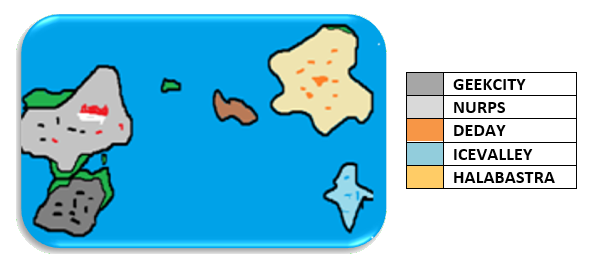 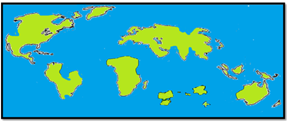
Note that many continents were reduced and many lands disappeared, did this occur so much by the "fractions"? such as by World War 3 and the sending of several nuclear bombs. World War 3 occurred in the middle of the year 2,520. The reasons are still mysterious, but a search center reported that it all started with threats on the internet. Where hackers claimed to have access to confidential information about the government of another country, asking for large amounts of money in exchange for its secrecy. This led to a series of other conflicts between the UN countries, causing them to break the peace agreement because they felt betrayed by each other...
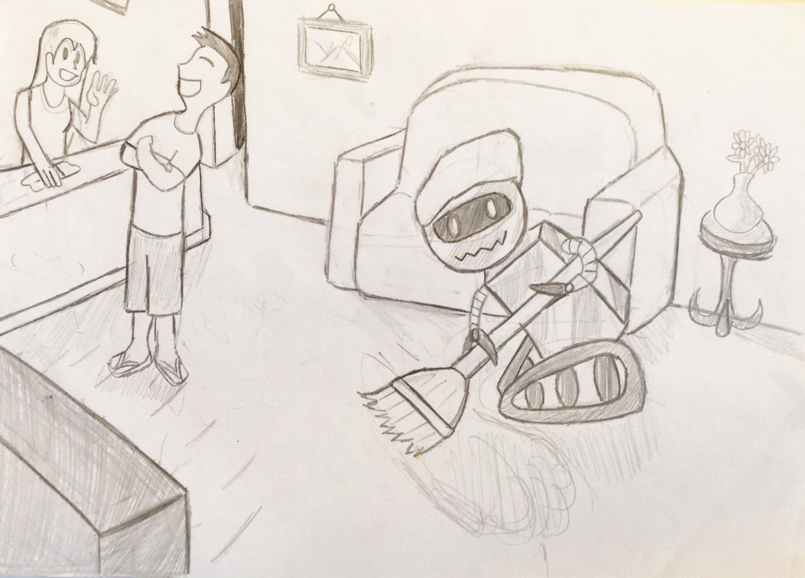GeekCity
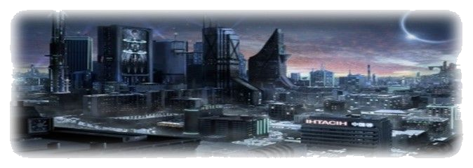The urban city most similar to the great powers of the twenty-first century. Don't expect to see flying cars, robot maids or anything like that there. Despite the year, many technologies were lost so there was not such a big advance. The founder of Geekcity was Omenn. Omenn already lived in this region, but in his childhood it was just a small village with a school. Omenn was a very intelligent and creative boy, he loved to invent things. After saving for a while his money from work he did on the farms, he managed to buy a wagon. With this wagon, Omenn began to travel around. Every time he went, he discovered a new technology, and he added copies to his cart. After several times returning with the cart full of equipment, that village began to have a great income. Omenn created an assembly plant, where he made replicas of those equipment for sale. With his earnings he made his own laboratory. This laboratory became quite famous for its variety of equipment; famous scientists like Manoel's parents began to work there, where they made inventions that the outside bought for millions of dollars. Thus, by investing, that place went from a village to a big city, all thanks to Omenn's efforts. But contrary to what it seems, Omenn did not become king, president or anything like that, he limited himself to being just any resident citizen.
GeekCity Characters
Sejo
Sejo Yano, the son of the founder of Geekcity. His father went on a kind of journey when Sejo was still a baby, the only one who knows the reason was his mother, but she never told her children believing it was better for them to just believe that their father had betrayed her. At the age of 8, Sejo joined the Geekcity boxing academy . There, his teacher, Nasu, saw potential in Sejo, even though he had very negative results in training with the other children. Nasu invited him to a "special training" that would be held on a secret island off the coast of Geekcity. Sejo, with his mother's permission, left with Nasu for this island (leaving a substitute teacher teaching in his place). After arriving on the island and having to climb a very high mountain, Sejo arrived at a Buddhist temple, with Nasu revealing his true identity as a master monk. Sejo had a hard time learning the combat discipline of the monks, but his days of effort were rewarded. He learned a technique never before seen in S.A: the ability to manipulate water from his own body! To Sejo that seemed like something useless, but with Nasu's lessons, Sejo was able to create unique movements, coating his fists with water bubbles, with the pressure of the water, his blows were even more powerful. He could also concentrate a massive bubble of water and throw it like a projectile, which despite not being so deadly, could knock out an unsuspecting opponent, as the pressure that the water exerted on this bubble was like a strong slap. Upon returning from his training, Sejo was one of the greatest boxers in the gym. His new abilities made him a monster in the ring, winning several championships. Sejo is very serious and has never been one to have many friends. In elementary school he was bullied enough to create a psychopathic instinct in him, having to take medication and go to the psychiatrist to get rid of the depression and desire for revenge that surfaced in his heart. Sejo created a desire to commit suicide, but fearing the pain of death he thought of secretly poisoning himself. After taking the poison, Sejo discovered that his younger sister, Sara, had disappeared after leaving to visit her grandmother in Nurps. Everyone knew that it was dangerous to leave the city alone, but Sara was still very young and naïve and ended up going (at the time Sejo was 9 years old, and Sara was 4). Even poisoned and knowing that he would die, Sejo went in search of his sister. On the way, he found her being attacked by a giant monster, her name was Gurz, an imposing "potency". Sejo was too small to face the monster, and was still weakened by the poison, having to flee with his sister, but preventing the monster from following him and entering the city. After a difficult and tiring race, Sejo, on the verge of death, took Sara back home. Sejo was relieved, and ready to die, but when his sister saw the things he whispered she started crying and screamed at him to stop saying that she loved him. Sejo suddenly felt such happiness that he at that moment decided that he didn't want to die anymore, he knew that his sister, his mother, his family, and maybe other people needed him. Remembering some water manipulation techniques, Sejo began to filter his own blood and cleanse his stomach by filling his belly with water. Incredible as it seemed, he managed to delay the effect of the poison, giving him time to go to the hospital and drain the poison completely. Going back to your normal life. Sejo's only friend was Vito, who due to his perverted personality was also not very recognized by the other students. At the end of elementary school, a new student named Kash also became a great friend of Sejo and Vito. In high school, the three met Mizo Kunoichi, who also became great friends with them. And lastly, in the same year, a new student named Caty joined Sejo's group of friends, improving his self-esteem and making him happier.
Kash
Kash is one of Sejo's best friends. His parents abandoned him and he was taken in by an orphanage, living there until he was 18. Because he had no parents and no discipline, Kash was an outlaw and did knife robberies, but one day he met a kind lady who invited him to live with her in Geekcity. When he came to Geekcity, he had a very cold way of dealing with things. After he started studying and met Sejo, he ended up getting the hang of him.
Vito
Vito is one of the "figures" of the group. He is also a great friend of Sejo and Kash, thus forming a trio of friends. Vito is the "funny" of the group, everything for him is a joke, he is very sarcastic and rarely takes anything seriously. When he died, all of Manoel's riches and companies were passed on to his sister's name. Manoel's sister married, and Vito was her son. His father, although faithful to his wife, was always a pervert, and Vito inherited this. Being the son of wealthy parents, Vito never had to worry much about life. Because his parents were always busy taking care of their companies and businesses, Vito also did not have much affection for them, did not know about Manoel or other kinships, always lived alone at home, acquiring a lifestyle similar to Sejo and Kash. Even though she didn't have time for Vito, his mother had a great concern for him, thinking that one day he could leave the city alone and be killed by the "fracions"?, his mother installed in his arms a device that was capable of creating certain spells. Even though he is a vagabond, Vito inherited this intelligence from his parents, so Vito is a "little genius" as well.
Mizo
Mizo, usually called by her surname Kunoichi. Sejo's school friend and the other heroes of Geekcity. She was born into a very simple family, with her little brother, her older sister and her parents. Her father founded a swordsman dojo, since Mizo was more attached to her father, she ended up training her dojo and creating this talent with katanas. His surname was given by his father as well, as he wanted one of his sons to be so skilled that he would be able to become a Ninja one day, he even thought it would be his youngest son, but he saw that the one who would have this gift was Mizo. Mizo is a know-it-all. She studied hard as a young woman, and can figure it all out just by analyzing. She is attentive to everything, has a very good vocabulary and is very calm. Despite being quite strong and resistant, Mizo never did well in fist combat, at school, the other students envied Mizo for being very popular for both her beauty and her intelligence, and whenever they fought Mizo ended up getting beaten. Once Mizo even tried to take her katana to school, but was caught on the spot and was suspended for possession of bladed weapons (Sejo, Kash and Vito made fun of her a lot for that). Mizo even tried to train at Sejo's boxing academy, but her punches were like a child's, and she ended up getting hurt by throwing them.
Caty
Despite having studied at Geekcity school, no one knew where Caty's house was. Caty was a new student at the school who apparently didn't have a name, so because of her cat-like appearance, she was nicknamed Caty, and that name was adopted by everyone. Caty is a peculiar figure in the group, she joined Sejo's group of friends, and her passion was for food, Caty at all times if she wasn't eating she was hungry, and her favorite dish was fish. Something that always worried the other students was why Caty had tail and cat ears that looked natural. Despite having smooth skin like other girls, in her tail and ears hair in the same tone as her hair was born.
Sara
Sejo's younger sister, her dream is to be a mixed arts fighter just like her brother.
Nasu
A monk who was expelled from his monastery for not accepting to shave his beautiful hair, living in Geekcity as a martial arts teacher. Nasu possesses an intense combat ability; His blows are swift and deadly, using the elements of nature to maximize them.
Nurps
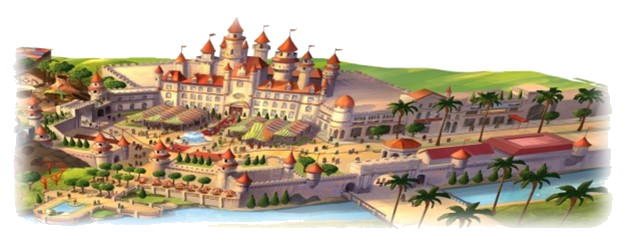Nurps is a region bordering Geekcity. A very beautiful city, with aspects that resemble the European Middle Ages, Nurps continues with the Monarchy system. Its current king, Dom Cruz III, is a just and kind king, so Nurps continues to progress, and his civilians are satisfied with his rule and trust him. Although the city still adopted many ancient features, such as castles, knighthood, and burghers, this mixed with the immigrant culture of Geekcity, giving a mix in the ideals. Dom Cruz III is a religious who inherited his religion from the first king and his grandfather: Dom Cruz, who was the one who organized that city and named it based on a set of books he liked. Dom Cruz III named his daughter Clari because he considered her a religious symbol of light, he wanted Clari to clarify the world, to clarify people's lives. The great castle of Nurps has several areas, and one of them is the Arena, a competitive and also leisure environment for many families, where warriors, both from Nurps itself and from other regions, meet to battle, bets can be placed, and the one who won the most fights would grow his ranking, each ranking has its rivals for a possible ranking climb, High ranks have cash rewards, and the longer a warrior stays in this high rank, the more times he will receive this amount, similar to a salary. The Nurps guard makes it known as one of the safest cities in existence; any self-respecting crime that is legitimized, the actor is hunted by the guards undeterred until he is found and thrown into the castle jail, paying there the time that is estimated depending on the severity of the crime. The jail is also free for visits, but is guarded by guards at all times. The captain of the guards, very loyal to his king and his favorite, is the so-called Groak, the strongest and most imposing soldier in Nurps, and also the oldest of the group. Groak also has a secret mission which is to protect the king's daughter: Clari.
Nurps Characters
Clari
Daughter of the kings of Nurps, thus being a princess (even though she doesn't look like it). Since she is the daughter of kings, she was always very spoiled by everyone, but that didn't affect her style much, what affected her was that she didn't leave the castle properly and was always in someone's protection. This made her fearful. When she and her parents went to Halabastra she gained a lot of fame for speaking well in public, so she thought she would gain courage if she was alone for a while, the kings ended up, even if doubtful, accepting to leave her there. Clari has always liked medicine, she studied a lot in the kingdom about it, thus being a medicinal cleric. As time went by, the longing began to come, but she couldn't go out there alone, so the way was to wait for someone to come and pick her up. The kings were so worried about the return of the Geekstas that they ended up forgetting about their daughter, so Sejo and his friends took it upon themselves to bring her back.
Groak
Leader of the royal army of Nurps. His appearance is distinguished by his silver armor that reflects sunlight like a crystal, his colossal steel shield with the symbol of peace, and of course: his beard. Groak was a friend of King Dom Cruz III even before he inherited the kingdom. Groak saw the birth of Clari and followed her entire life. He was like a second father to her, whenever the king didn't have time to pay attention to his daughter, she turned to Groak. Her goal in life has always been to protect Dom's daughter, whatever the cost. After Clari remained in Halabastra, Groak was worried, thinking that she might be killed, but he could not abandon Nurps' guard.
Icevalley
The least populated city in S.A., both for its climate with constant temperatures below zero and for the bad impression that the city gives of sadness, death, and the legends that exist about the city. The center of the city is marked by the church, which is taken care of only by a girl daughter of the owner, as her father was murdered by a demoniac. Behind the church is a vast cemetery guarded by a mysterious gravedigger with a green skin. There are many legends about this gravedigger, some say that he is a redeemed "fracción" who has taken human form, others believe that he has already been killed and remains there as a lost soul, there are also those who say that that skin tone is due to an incurable disease that he has, and for these many reasons no one dares to talk to him. People who live in Icevalley are always discouraged and distressed, most without an apparent cause, believing it to be bad luck given by the city. Because there are no walls or anything like that protecting the city, often "fractions"? attack the unsuspecting residents (one of the reasons for the low population).
Icevalley Characters
Ana
Ana, the shooter and Mike's sister. She lives with her brother in IceValley. As a baby, Ana and Mike saw their parents thrown into the high seas by pirate captain Kreget, they were left in IceValley by their parents' clemency before falling into the water, and were raised there alone. Therefore, Ana and Mike hold a huge grudge for this Kreget.
Mike
Ana's older brother, inheriting his mother Mirella's skill with bows, Mike is a great archer. He, because he was more aware at the time of his parents' death, is much more angry than Ana, this even changed his nature, now it seems that he is angry with everyone. To support himself, Mike had to go hunting through the icy mountains of IceValley, finding food and shelter for his little sister. After a long time, they found a city to live in.
Halabastra
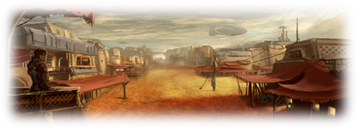The largest city of S.A. Halabastra also has an arid climate and is quite uncomfortable for foreigners. Halabastra is surrounded by a vast desert and its whereabouts are similar to those of the Indies. Because it is a very large land, Halabaster has dividers of surrounding cities with a similar appearance, but with different rulers. The major ruler in Halabastra is Sultan Laden Hassen, a very imposing man. Laden, being single, has always been strict and serious, but after meeting Clari, his fatherly instincts began to awaken.
Characters of Halabastra
Getorvis
Almost nothing is known about Getorvis, he is found standing there doing nothing in Halabastra and simply joins the group for this reason: to have nothing to do. He is a spearman. Something that makes him a unique character is the addiction he has to say "it's logical". Whenever someone says something, they come saying "it's logical!" (It seems that he understands something about the logic of things, but no, it's just a habit of his). He is always wide-eyed, no one knows why.
M.C.P.
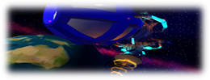MCP (Master Cracker Plan) is an association formed by the people considered the most powerful of the century. Created by a man named Manoel Crunx, a renowned biologist who had a utopia of creating a new world so that the good people who suffer here could live in peace. Manoel invested in a giant spaceship that could be inhabited even in orbit, and it was in this spaceship that MCP lived, looking for another planet that could be inhabited. After several years they finally found a planet, and then began to search for it. Manoel was an expert in organisms, and after studying some beings that lived there he finally understood the formula of life, creating more resistant species of human beings. However, after seeing that society he created, Manoel no longer wanted ordinary people to live there, in fact he didn't want them to exist anymore, only those of that world. At this moment Manoel freaked out and sought to destroy the Earth, creating a nuclear weapon to blow it up. The MCP did not agree with this new idea of Manoel, trying to stop him, realizing that not even his own association supported him, they also sought to kill them, but when they realized this they locked him in a room until he returned to normal, but to their surprise, after so long in prison, Manoel committed suicide. After this tragic situation, MPC decided to choose a new leader, who was Manoel's apprentice right-hand man, Mr. Alpha, following his old ideals. For reasons of secrecy and respect, the members of the MCP always wear white masks, and use a code name in Greek numbers to identify themselves. The mutation that Manoel made in their bodies made them able to return to the form of molecules and move through the air at incredible speed, then return to their original form, basically a slow teleportation. Although all members of the MCP have this ability, some members have better control than others. The table at MCP HQ is in the shape of an "M", where the 3 main members are in the middle and the others are 4 on each side. Now MCP has two goals: the first is to keep the peace in that futuristic world they had created and the second is to find a way to stop Master Cracker, because although Master Cracker was very different from the original Manoel Crunx, they knew the chaos that was happening on Earth and recognized Manoel's personality. With 11 members, MCP is the only one that has complete information about Shadow G.
M.C.P. Members
Manoel Crux / Master Cracker
The whole story of The Geekstas begins in Manoel's childhood. He is the former leader of MCP. The son of mechatronic engineers, Manoel apparently had a good childhood. He studied at the best school in the city. His best friend, Alpha, in turn, was an orphan and poor. Manoel was the nerd of the class, innocent, a favorite of the teachers and hated by the other students. But even though the other students didn't like him, Manoel was always safe at school, because Alpha protected him from everyone, Alpha was the biggest in the class, quarrelsome and strong. Manoel's parents did not let Alpha go to their house because they had a certain prejudice, thinking that he would be some criminal, so Manoel asked to go to Alpha's house, and with a certain fear his parents allowed it. Manoel, whenever he went to the Alpha neighborhood, was impressed by the situation of the people there. He often saw scenes of robbery, shootings, kidnappings, saw groups of people taking drugs, in short, all kinds of social problems, and that seemed normal to Alpha. Manoel created a certain fear in society since then, he thought that the world was dirty, not only with garbage, but with bad people. For Manoel, the world had no future, it would soon become an uninhabitable place. Since then, Manoel has created the dream of finding another planet to live on. Manoel also decided which college he would attend: biology; because he wanted to discover ways to improve the human species. Now, Manoel's ideas seemed crazy, some kind of utopia, but he remained firm, did a doctorate in biology and began to earn very well at work and get rich. He bought a spaceship and created MCP. While living in the MCP, Manoel went crazy: instead of saving, he wanted to annihilate humans because he thought they were too inferior. After trying to kill MCP herself for contradicting him, he was killed. After dying, Manoel was resurrected with a new body, his name is now Master Cracker, with the ability to hack even the world. Her black trage with a hooded scarf with a white sphere-shaped button, her pale white skin, and her electronic sunglasses with her straight silver hair back make up her look. Master has created his own combat weapon, a bracelet that emanates a broad blade of electricity called the Deleter.
Alpha
Alpha is the New leader Of MCP, He is an android. His physical strength is incredible, similar to the Dejoke, He can throw people away with one arm. He is the strongest of the group, fighting without the need for equipment or weapons. His bionic eyes are capable of copying the opponent's movements or speeches, so Alpha is also a very intelligent man. For reasons of honor and example, he never takes off his mask. Her blue hair stands on end back and her underwear rimmed jeans are her underwear insiders. Despite not using weapons, Alpha can shoot his fists through a thruster and chain inside his arms. Alpha was the "hot-blooded" boy at school, he fought with anyone who messed with him, no matter who it was. One of these fights was with a gang boy, who arranged with his gang to catch Alpha alone at night to lynch him, but Alpha was very skilled and managed to handle everyone by himself. It was then that they plotted something worse: when Alpha was riding in a car (yes he was young but he already knew how to drive without a license), they planned an accident, plunging a truck into his car. Alpha was unable to swerve and hit the truck full, but the truck driver had already jumped out and was not injured. Alpha violently hit his face on the windshield and fainted for a few minutes, meanwhile his car started to catch fire, when Alpha woke up he saw that his face was all cut and bleeding a lot, in addition to the fire that had burned his body a lot as well. His legs and arms had been broken by the wreckage of the car. The only thing he could do was rest his face on the steering wheel with his head projected to the outside of the car. After a few minutes silent in the burning car, Alpha said: "why am I still alive?", the car refused to explode and there was no one nearby to help him. Seeing the state Alpha was in, and that he was still alive, the boys of the gang felt bad and decided to help him by taking him to the hospital. Alpha was from the same school class as Manoel, they were friends, and when Manoel learned that his friend was hospitalized on the verge of death, he was worried. Luckily, Manoel's parents were professional scientists and Manoel asked them to help him. Alpha was bleeding heavily, he had been hit in vital organs, the hospital's resources made it impossible to have effective surgery to save him in time. If it weren't for Manoel's parents, Alpha would have died. Alpha was taken to the laboratory of Manoel's parents, who began to implant electronic devices to cover gaps in his body. But while the implants were made, other systems were affected, it was then realized that Alpha's vision had been lost, making it necessary to implant robotic eyes... Realizing that Alpha was no longer so human, the two scientists began to use creativity and fulfill their dream: to create an android.
Beta
Beta is a champion of muay thay and capoeira. He has a hobby of being a surfer. Despite looking like an ordinary guy, Beta has an incomparable kick, the power of his legs is superior to anyone. Her clothes are very relaxed, her trademark is her flip-flop and orange jacket with flower designs. As a young man, Beta loved to run away from school to go surf on the beach with friends, but one day he wanted to go deeper into the water, his friends hesitated, but he still kept going. When he reached a certain point it was no longer possible to see the bottom of the water, it was then that a shark attacked him, he tried to call for help but there was no one around. The shark bit one of his arms that was almost mutilated, Beta was a good swimmer and the shark was not that big, giving them a chance to fight, Beta was hit in the other arm after trying to use the board as a weapon, it was then that a fisherman who was passing by heard the noises and went towards him, luckily he had a harpoon, and with a precise movement Beta immobilized the shark for a moment, allowing room for a fatal shot from the harpoon. Even after being treated at the hospital, Beta's arms continued to have bite marks (which even appeared to be tribal tattoos), and his cheek was left with a mark from the graze of the harpoon. Amazingly, he continued with his hobbies.
Range / Gama
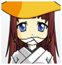The greatest karate fighter of the century. She wears bandages in her mouth and a Chinese hat she got from her father, who put her in the foreign martial arts academy. Because she didn't know how to speak the language of the country she was in, Gama was bullied by the other students, but her father was so proud that she didn't tell him so as not to hurt him. But Gama grew so much in that academy that the other students became jealous and plotted to get her to fight the big student in the class. They put the big guy and her on the mat, and despite being afraid, Gama accepted the challenge. She fought with everything she had, but when she was caught in an immobilizing blow followed by a well-aimed blow to the throat, Gama fainted. When she was taken to the nearest hospital, it was found that she had become permanently mute, as her vocal folds had been ruptured. But this, contrary to what it seems, made her more determined in her fights. Gama won several karate championships, being known as "the silent kick", his breaking blow served as a reference to several other fighters for being the strongest to date. After entering the MCP, Manoel said he could try to restore Gama's speech, but afraid of surgery she denied it and preferred to remain mute. But Manoel still wanted to help her and designed a little guide robot that walked with Gama and translated his sign language into speech.
Shacaw
One of the greatest soldiers of the century, Shacaw has skills with any firearm. Her appearance is beautiful, her red hair and her light brown leopard-like eyes draw the attention of young women throughout the Smart Archipelago. His red coat with playing card symbols scattered around him that he wore when he was a magician and his custom clown pants that he wore when he worked at the circus, and his arsenal of weapons spread across his body, usually consisting of a mini-gun machine gun strapped around his waist, a ranged rifle on his back, Two revolvers, one on each side in his holsters, a fanny pack of grenades and an army camouflage cloak hidden inside his coat. He also has an impressive drive, second only to the Needles family. Since he was a child, his dream was to serve in the army. At the age of 18, because he was a young man of great stature and very athletic because he attended the gym from an early age, he impressed the military after doing, even with difficulties, 100 push-ups with a recruit on his back. After 2 years as a soldier corporal, he was recognized and graduated to sergeant of his brigade. In his first war he won, losing only 7 soldiers (this number was marked for him, that's why he always walks with 7 grenades in memory of these soldiers) managing to reconquer a region that was dominated by barbarians. After making a dignified grave for the 7 brave soldiers and a prayer for their families, Shacaw and his brigade celebrated the victory with a good barbecue. Upon receiving the news, his superiors requisitioned Shacaw, graduating him to 1st lieutenant and giving orders to command his platoon to one of the militia's most difficult missions: the battle against the aliens of the Arctic. Shacaw was confident, confident too much, his soldiers also trusted him to the point of being in agreement with any order from him. Shacaw made a fairly precise plan, but he didn't count on the size of the enemy army. Shacaw was on the front line in the war, armed to the teeth and well protected, Shacaw denied all the attacks made against him, but the vision he had was horrible: his soldiers began to be repelled, those who remained were frightened and fled towards Shacaw asking for help while being hit in the back and killed. The bravest fought with everything they had. By Shacaw's side was his best friend: Mike. Mike was a friend that Shacaw had known since the two of them joined the military. The two were always together. Shacaw met Mike's family, a poor but happy family. His wife, Ana, loved it when Shacaw visited them, Shacaw said that Ana's food was the best. Mike was quite happy to learn of Shacaw's graduations in the army, although he was not so lucky. But by becoming Lieutenant Shacaw obviously put Mike in his platoon as leader of the attack squad, staying by his side. When Shacaw saw that he was losing the war, he gave the soldiers a flight command, but the enemy army had already surrounded them, he also tried to surrender, but the leader of the enemy army was butcher and bloodthirsty and did not accept the request to surrender. Overcome with hatred, Shacaw left his platoon for a moment and went up to the enemy army and began to use the maneuver called Desperado: he took his two revolvers and began shooting around at incredible speed. But Shacaw, even strong, was only one, and he couldn't kill all the enemies alone. When he saw that he had his guard open, Shacaw closed his eyes and waited for death, but to his surprise he only heard gunshots, but nothing hit him. When he opened his eyes, he was faced with his first nightmare, Mike was in front of him totally shot, he had thrown himself in front of Shacaw to save him. Before he died, Mike said, "Captain, I'm sorry, but I'm going to have to abort the mission... Take care of Ana for me." Shacaw took Mike by the shoulders and started running desperately among the enemy soldiers, but his agility was such that they couldn't hit him, he ran to the relief party of his platoon, but when he got there he had his second nightmare, his platoon was no more, everyone was dead, only one fallen soldier could still see him and spoke with difficulty: "Captain, where were you captain!?" and received another shot and died. Shacaw couldn't hold back his tears. He was alone in the midst of his army of dead soldiers. Mike, his best friend, died on his shoulders, and died to save him from his own mistake in trying to contain the enemies alone. After almost freaking out at seeing all that, Shacaw began to use several weapons at once, shouting "DO YOU WANT ME? SO COME AND GET IT," his face was frightening, so much so that the enemy army became afraid and began to retreat. Shacaw took a bullet from the gun that was with Mike and said: "this is for you Mike" and with that bullet killed their leader with a precise shot from almost 500m away. Shacaw used the radio to ask for a rescue from the HQ, which even though it took 30 minutes to arrive, found Shacaw alive and unharmed (at least in the body) and took him back to the HQ. Shacaw then resigned from the army. When he went to tell Ana about what had happened to her husband Mike, Shacaw had her third and complete nightmare: Ana , horrified by the news, ran to the drawer and pulled out a pistol that she and Mike kept there for safety, but when she pointed it at Shacaw, she actually shot herself in the head and died. Shacaw, after several months of treatment at the psychiatrist, married a girl named Mirella and began working in the circus as a magician. He had two children, and named them Ana and Mike, in memory of his soldier friend and his wife, saying that the promise would extend to the children of Shacaw to protect them.
Mirella
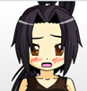One of the best archers of the century. His parents were biologists who went on safari in the forests to learn more about the fauna there. In her childhood, on one of the farms, there was a terrible storm where an earthquake split the road where Mirella's parents' truck passed. When they tried to brake sharply, Mirella was thrown out of the truck, falling into the crevice. Her parents ran to try to save her, threw a rope, shouted her name, but it seemed that the hole was too deep. Bewildered and not knowing what to do, Mirella's parents left the place and returned home, believing that their daughter had died. As she fell into the crevasse, Mirella hit a branch and then a pile of leaves, which was like a cushion. When she came back to consciousness, Mirella found herself surrounded by a kind of "fractions" similar to monkeys, but which behaved like people. Mirella was in a village, which despite being thousands of meters below the ground, had vegetation, as rich as the ones we know, a lake of crystal clear waters, trees with palm trees so large that their foliage served as roofs. These monkeys seemed to be very intelligent, and they took a liking to Mirella, taking care of her as one of her young. As she grew older, Mirella learned the language of that species, so they taught her the method of communication of most animals, and also taught her how to handle bows and crossbows for combat. When she was grown up, Mirella remembered her old parents, and told the story to the leader of the monkeys, asking if there was a way to get out of there to return to the surface. Sad to see that she wished to leave, but knowing that it was necessary, he showed her the way to a way out. Upon arriving in the city, Mirella returned to her parents' house. To his surprise, his house had become a bazaar, all his things (even the intimate ones) were for sale. Her parents, believing that Mirella had passed away, were getting rid of all their belongings so as not to feel so sad. When Mirella saw people seeing and buying her personal things, she was overcome with such shame that it made her feel ashamed of everyone. Upon seeing her parents, they almost fainted when they saw their daughter alive, and already grown. After a strong hug, Mirella told everything that had happened, and her life returned to normal. After a while, Mirella met Shacaw and the two fell in love and soon married. Seeing the talent that Shacaw had with ranged weapons, his skills with bows and arrows began to return, making the two train together and thus become incredibly accurate in their shots.
Fah
Fah is the youngest member of MCP. His talent is in submissions. She is a black belt in Jiu Jitsu and Haikido, she uses needles as a weapon doing acupuncture. Before joining MCP, she was a nurse recognized for her unfailing talent for leaving her patients calm and refreshed. As she is still an apprentice, she does not yet have a Greek symbol, but uses the bass clef, as it is similar to her codename. *Developing history*
Clea Mup
Clea is the best maid of the century. In addition to being admirably beautiful, she was recognized for being very agile in her cleaning. She broke the Guinness Book of World Records for being able to clean a 10-room house in just 1 minute without leaving a trace of dirt visible. Clea also has a knack for making great food. However, behind these talents there is a sad story. Clea is the daughter of slaves. His mother was a renowned political leader who fell in love with a man who after getting married discovered that he was one of the hackers from another country. After the beginning of the War, her husband was discovered and sentenced to death, but Clea's mother did not accept this and tried to justify his actions. With her senate and voters being against the hacker's freedom, they removed her from her position and also sentenced her to death, both of them having to flee the country. After arriving in another country, the two had to serve for the bourgeoisie there in order to survive, ensuring their safety in the midst of the war. It was in the meantime that Clea was born and raised. When Clea reached a certain age, she was separated from her parents and sold at auction for the profit of the family that her parents were slaves to. Clea, a child, being the only servant and having to take care of an entire mansion by herself, spent her entire youth in this life. Until at the age of 20 he planned an escape and returned to his parents, who had already gained the trust of the family in which he worked and were in a slightly better life.
Dejoke
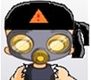Dejoke had a hard life. Father of many children and his wife died of cancer, his profession was mechanic, but his earnings were not enough to support his family. Her children lived sad and crying. So he, in addition to being a mechanic, became a clown, going to birthday parties for several children, while his own were at home crying. From working for so long, he created permanent dark circles. He received a proposal from the government to earn good money, but after accepting he saw that he was to be a test subject for toxic substances. His body reacted in several absurd ways, first his body became very strong, his height doubled, and most incredibly, his eyes emanated a light. After hours in the gas room, he fell to the floor, apparently dead, but after a few seconds his mouth moved and said "What did you do to me?". Seeing what had happened, the government was enchanted by it. But when you tried to use the same gases on other people, they died instantly. The scientists were puzzled: "Why did Dejoke's body react like this and the others' didn't?" Another problem was that a catalyst had been created from those gases in Dejoke's lungs, and he exhaled that gas when breathing and speaking, it was necessary for him to use something that filtered it, so they created a kind of "reverse gas mask" for him. In reality, that test that Dejoke passed was of a secret government organization to create nuclear bombs to be used in the War, but when they discovered that they used live human guinea pigs, the Justice of S.A . abolished the operation and collected all the containers they had of the gas. The only container left was Dejoke himself, but even with the proposals that the government made he refused to cooperate and returned to his home. He knew he was no longer the same, but he would not stop seeing his children because of that. When his little children saw him, they were very afraid, thinking that he was some evil monster. When he played some jokes that was usual and when he closed his eyes and showed his dark circles, his children recognized him, and the eldest said "daddy why are you so high and ugly?", Dejoke gave a forced laugh and said "it's just that daddy ate spoiled food", and they innocently believed him and liked him again. Dejoke could no longer work as a clown, but he could continue to be a mechanic. Dejoke suffered when walking in the streets; People kept looking at him in amazement and whispering among themselves. But somehow this helped him to be recognized, being one of the most well-known mechanics of the time, with several nicknames: "giant", "Jason", "Gorilla", "masked man", people prescribed it to anyone who needed it.
Jack
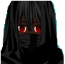A member of the needles family, Jack is a shinobi who suffered heavy racism in his childhood because he and his sister, Syand, were the only black ninja in the clan. That's why he created a fear of his appearance and painted his face in such a dark color, but so dark that not even in the sun could see the face of his face, only his red eyes, wearing the hood and mask of the uniform, Jack is the only member of MCP who is allowed to walk without the white mask, because he did not have the need. Jack is a born ninja, his speed is incomparable, his teleportation is one of the most evolved in the MCP, Jack acquired through Manoel the ability to clone similar to that of cells.
Syand
Jack's blood sister. As a child she suffered a lot from poverty and racism, her parents were killed stoned and trampled on by soldiers from neighboring countries. She is Jack's older sister, and when they lost their parents, Syand had to take care of Jack, both of them as homeless people. Until one day a ninja saw them running away from a store with food and was impressed by the agility they had when running away from the store owner, and took them to his ninja village to train them.
Meinov
One of the best spies of the century. He decided to go to law school, and as his first case he had to try a rich man who had been accused of raping a 12-year-old girl. Being a beginner, she almost lost the case, but finally decided to look for evidence herself at the man's house, who because he was rich lived in a mansion with heavy security. It was from there that she realized her talent as a spy, she easily penetrated security and managed to reach the man's room and found traces of the case in his bed. After her success in court, Meinov was recognized by a secret espionage organization and worked there 24 hours, becoming a born spy.
Underworld
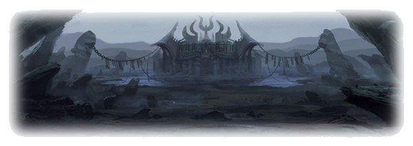Home to all fraccions. The location of this place is unknown, some believe it is not part of the Earth, some say it is below the Earth, some say they have already been there, but one thing is certain, this place exists. Although the underworld is home to certain living beings after death, it is not the final destination, that is, it is possible to die in the underworld, but in very specific cases.
Characters from the Underworld
Shadow Gamar
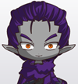Best known for just Shadow G. The only people who know the meaning of the G. in his name are his wife and son. Shadow Gamar is an evil entity found at the gates of the underworld. Whether his function was really the "gatekeeper" is not certain. When he saw Manoel Crunx coming towards the gates, he approached and questioned him. Shadow was very interested in Manoel's story and made a deal with him. Shadow G, despite not having a post in the underworld, had incredible powers far superior to any other person's, his uniqueness was the ability to polymorphize; he could transform into any kind of animal or creature. Despite looking like a heartless monster, Shadow G has family ties. His wife, Flake, was a beautiful Asian nymph who was sentenced to death and ended up meeting Shadow in the underworld. There they married and had a son, named Lasher. Shadow G, just like his entire family, did not possess a physical body, he had the ability to go to Earth to tempt humans, but could not interact with them, and Shadow did not like this situation, preferring to stay in the underworld. Something interesting in his afterlife is that after seeing so many famous singers pass through the gates of the underworld, Shadow began to acquire passion and even talent with music, having the habit of rhyming talk.
Flake
Flake was an ancient dragon that went extinct long ago. Upon arriving in the underworld, Flake adopted a human form. When Flake met Shadow G., the two fell in love and married, but Flake never told the truth about his whereabouts. She made up the story that it was a nymph who was murdered, to convince him that she really looked that way. Despite having a draconic transcedence, his son, Lasher, was born with a human appearance. Upon receiving a body and returning to Earth, Flake secretly asked Manoel to use the genes of her old dragon body as a base, which resulted in a "half-and-half" body.
Lasher
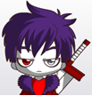Son of Shadow Gamar and Flake. Lasher since he was a baby has always shown talent with blades, and even at a young age he carries several swords with him. His dream was to be the next Soul Reaper, but instead of wearing a scythe and a black hood, he would wear a sword and Samurai armor. Life in the underworld is very difficult, Lasher doesn't understand many feelings; Even though he has a father and mother, he does not know what love, hate, happiness, sadness is, etc. That is why his face is always neutral. Time in the underworld passes very slowly (just like on Novatera (the name of the planet that the MCP rules)), 1 year on Earth would be approximately 100 years in the underworld. So, Lasher, despite appearing to be young, has lived much longer than the adults on Earth. With the interbreeding of his parents, Lasher inherited his father's strength, and his mother's draconic abilities. One of its combat particularities is its flex katanas; swords that change size to hit targets farther away.
Non-Specific
Kreget
A pirate who claims to be the most feared of the seven seas. Despite being a pirate, Kreget wears heavy copper armor and instead of using a saber, he prefers to use a giant axe. Kreget, because he lives on his sailing boat, does not have a specific town to live in, but it is believed that he was born in Icevalley. His biggest hobby is kidnapping people and looting, so much so that the deck of his ship is full of slaves and treasures, and one of his greatest treasures was a horse one he found on a mysterious island. This horse had mystical powers capable of memorizing the appearance of any person he was looking at and then transforming into them (just like the Pokémon Ditto). Kreget used this horse several times to deceive people and win battles between other pirate ships. One of the people Kreget deceived was Shacaw and Mirella. By making his horse look like Mirella, Kreget induced Ana and Mike to enter his ship, keeping them stranded on deck as slaves. Upon discovering that their children were kidnapped, Shacaw and Mirella went after Kreget's ship and upon finding him, Kreget negotiated to return Ana and Mike at the cost of 10 years of servitude. Shacaw and Mirella accepted the proposal, and served for about two years, when Shacaw tried to rescue his children by force. Kreget when he saw that they were rebelling, grabbed Ana and Mike and threatened to cut off their heads with his axe, Mirella begged Kreget to stop, and he, afraid that their strength would one day bring him more trouble, said that he would spare the children if they "walked the plank", when they found themselves in this situation, they only asked Kreget for one favor: that he release and leave Ana and Mike in a city; Kreget accepted, so Shacaw and Mirella jumped into the sea together, and Kreget never saw them again, assuming they had died at sea.
Blaze
A "potency" made by Manoel in the likeness of Sejo after his fight against him at the top of the Tower. Blaze has the same fighting style as Sejo, despite being much stronger and having his interior coated in pure magma, making him able to emanate fire and lava at will. Blaze is the most powerful "potency" of all. His goal is to destroy Smart Archipelago, but because he is one of the only potencys capable of reasoning, Blaze has a particular interest in making Sejo suffer.
THE GEEKSTAS 1
P.S : The story needs adjustments, as it is based on the initial design of RPGMakerXP.
SUMMARY At the end of the semester, the school in Sejo does a summer recreation activity: a camp. In this camp, students are attacked by two beings that appeared to be aliens. By almost killing the students, the beings leave, ruining the ride and leaving everyone hospitalized in a coma at the Geekcity hospital. The heroes, who fought more directly with the two unknown beings, were the ones who were most injured, spending about 1 year in treatment. Because of a slight amnesia, the heroes don't remember exactly what happened. A year after being discharged from the hospital, Sejo has a dream in which he remembers what happened (which in this case the dream is the beginning of the game) and decides to leave for Nurps and ask the king, who is recognized for his great wisdom. When he tells the king the dream, he informs them that there is a cave in Halabastra that serves as a connection to the world in which those two beings live. Sejo gathers his allies and sets out on an adventure to this cave. (...) As they pass through this cave they find a luminous exit, and as they pass through it they come to a place which seemed to be what the king spoke of. In this place they see a large tower surrounded by lava, and at the top of this tower they see the two beings (what were they doing?). They go up there and fight a "rematch", where they emerge victorious. But, during the battle, everyone is teleported to somewhere similar to the cideral space, and upon defeating the beings they break the spell and discover that they were actually floating in the sky, and begin to fall... At this moment that they start to fall is where The Geekstas 1 ends, and then it is at this same moment that The Geekstas 2 begins.
CONTINUATION... (The Geekstas 2)
After landing on a beach off the coast of Halabaster, the heroes arrive in a town called Powderflour. As they head to Halabastra, Jack suddenly disappears from the middle of the group, and the heroes go looking for him, but do not find him. In the middle of this search they meet strange people who say they know Jack and try to explain why he disappeared. The heroes then decide to separate, each going to their home to return to their normal life again. Then they leave Getorvis in Halabastra and go to Nurps. After returning to Nurps, the heroes go to the garden of the king's castle, and there they see him watering the flowers. Clari , when she sees her father again, runs towards her and the two give a strong hug. Thus, Clari returns to being the princess of Nurps and the remaining four heroes return to Geekcity. In Geekcity each hero returns to his home to get back to his day-to-day life. They look for the gift that a mysterious woman says Jack left them, but no one finds the gift. 4 years pass where each character develops particularly. Sejo visits the home of his relatives, in this case his mother Silia and his younger sister Sara. The two are euphoric to see him after hearing the news of his adventures out there. Sara creates an immense desire to learn how to fight like Sejo. He promises to find a way to train her. She, despite being clumsy, has a great talent for fighting. Sejo thinks about taking his sister to train with his former master: Nazu, who lives in the mountains of a distant valley, and needs a boat. The two go at dawn on the coast of the city to look for a boat, and find a very large boat. Sejo asks Sara to wait and enters alone to investigate, when he gets on the boat he realizes that he already had an owner and that he was leaving, when he realized that he was already on the high seas and that he would not be able to return, he wrote a note and put it in a bottle and threw it towards Sara. After setting sail, Sejo comes across a pirate crew. (..) After a few adventures there, he becomes the new captain of that crew. So Sejo returns to pick up Sara and take her to Nazu. As a captain, Sejo learned swordsmanship and began to use a French pirate saber. Kash decided to meditate on top of a mountain to free himself from bad memories and discover his own identity. But at the top of this mountain there was the nest of a large bird monster, which felt threatened by Kash's presence and attacked him in the eye, almost taking away his vision, but Kash when trying to fight back saw his chicks and hesitated. Kash decided to return to that nest every day to see that bird, until one day he managed to train it, becoming faithful companions: Kash and his giant bird that he affectionately calls "Bird". After earning Passover's loyalty, Kash became interested in exploring the skies, just like a bird. So he decided to be an aviator. He joined the platoon of the Geekcity V.R.U.M (Road Shipment of the Military Union) armada. With his companion Bird next to his plane, Kash feared no sky anywhere. Vito started his project of an M.E.C.H.A, and took the opportunity to develop a sword that reacted with the device on his arm, he spent the 4 years inside the laboratory doing this, as a consequence his hair grew a lot, but not his beard because he doesn't have a beard. M. Kunoichi also went to visit his family, and stayed there for a while, his older sister Mizao, his younger brother Mitsu, and his parents Jonn and Monna. One day his younger brother goes to play near the house and finds a mysterious object similar to a lantern, this day is Mizo's birthday, and Mitsu decides to give that object as a birthday gift to his sister. After the party, upon receiving the gift, Mizo decides to go to the dark bush to test her new flashlight, what she didn't know is that that object was actually a hologram message from MCP asking whoever received the object the opportunity to visit her HQ. There Mizo learns the mysteries of Master and Shadow. Caty's life was a secret until now: why did she have a tail? Why has no one ever bothered to ask that? That's that. Caty was sent to society after being expelled from her feline village. Her father, Leo Pard trained her to be a warrior, despite always being criticized for having relations with a human. Just like in the movie Tarzan, Caty was the only human-looking child in the group, the other cubs are all pure felines. But Caty has always been too naïve and weak to fight. Her mother was treated like a goddess in the village, but after they realized that she was weaker than everyone else, she was expelled from the village by the chief and husband Leo Pard. Caty lives with her mother in the city. But after returning home, he decided to visit his father to tell his adventures and perhaps make him proud. To her surprise, when she arrives at the village she comes across an arena, she wins overall and is recognized by everyone in the village, being accepted back. Claire After returning to his royal life he began to exercise his talents with art. He began to make art paintings. Getorvis remained with his strange life, until one day he learned that a marathon was taking place in the ancient catacombs of the village pyramid. The reporter asked people who would be brave enough to risk it alone for 3 days inside the catacomb. Getorvis was pushed forward, and when he asked him, his addiction to language condemned him to accept it by saying "it's logical". There, Getorvis is killed by a mysterious man. But after 2 years he is resurrected by Shadow G. becoming one of his minions and seeking revenge. His body remained fetid as it was after his death. Jack, after disappearing in Halabastra, returned to MCP HQ to report the events to his boss. After staying in the MCP for a while, Jack, despite being a ninja, still had feelings for the heroes. He then asked Meinov to send a recording to Earth requesting that one of the heroes visit the HQ. In this case, it was Kunoichi. After a year, Jack learned the news that the leader of his Needles clan, Suzanaa A., had been seriously injured and was on her deathbed. Jack used the shunpo and quickly reached her, and upon realizing that she would soon die, used a jutsu to seal her soul in a scroll. From that day on, Jack always walked with his leader's scroll on his back, his goal was to make Shadow G. revive her. Jack spent 2 years searching for techniques to free Suzanaa A.'s soul in battle. Suzanaa A. also had a typical weapon: her cursed throwable katana, which was the symbol of her strength. Jack was its new bearer. EXT. In these 4 years the heroes see each other and go out together, go to dances, parties, many funny and entertaining things happen between them. After 4 years, a group of Nurps soldiers arrive desperate in Geekcity to break the news that Nurps was being attacked by an extremely strong being and that the city was all on fire. Of the 5 heroes (Sejo, Kash, Vito, Kunoichi and Caty), the only ones who were in town were Sejo (he had his ship on board at the docks) and Vito, but Vito seemed very busy and said he couldn't go. Sejo then leaves alone for Nurps. When he gets there, he sees dozens of fallen soldiers and others surrounding a certain area in the city, as Sejo approaches the soldiers already recognize him and rejoice, taking him to where the enemy was. Sejo then meets Blaze, a "potency" in human form and very similar in appearance to Sejo himself. When they see Sejo, the great hero who defeated Shadow G, the kings and his daughter and now princess, Clari, are very excited, soon a circle is formed between Sejo and Blaze between soldiers and the crowd, all cheering for Sejo. Blaze introduces himself to Sejo and says some things that provoke him and already make him start the fight. The two fight fiercely, but Blaze, to everyone's amazement, ends up winning and leaving Sejo on the ground. The crowd is gripped by fear and begins to walk away, but Blaze laughs and says that he will give Sejo a second chance, setting a date for an all-or-nothing rematch, and in a burst of fire, Blaze disappears. After a few moments, Sejo gets up with difficulty, and embarrassed tells everyone that next time he would not lose again, and faints, being taken to the medical center of the King's castle. There his wounds are treated, Clari goes to Sejo and tells him not to feel bad about losing, and that she still considered him the best fighter of all. This encouraged him to train as hard as possible for the rematch. Sejo then heads to Geekcity to train with his crew, creating several new moves, including his trademark: "Equator", "Greenwich" and his most powerful move: "Hissatsu: Ultimate Death Bayblade". In the meantime, Kash returns from his aeronautics mission, Vito finishes (...)
Boss Battle Ideas
VS MISTER ALPHA – The Geekstas 2 – Ch. 3
PLAYER: SHACAW DIFFICULTY: Medium
SCENE SUMMARY: After a meeting between the members of GKT, Shacaw is forbidden to go to Icevalley to monitor the guard of Novaterra. Shacaw does not accept and says that he will go to Icevalley to save his children or he will leave MCP. Alpha argues with him and Shacaw prepares to leave, when he feels Alpha's hand on his shoulders. With an outburst of rage, Shacaw draws his pistol and shoots back towards the hand, when he sees that Shacaw was still sitting and had thrown his fist, he is pulled by the chains close to Alpha, who punches Shacaw in the face, says something impactful and starts the fight. FIGHT: Alpha will remain in the middle of the scenario, separating it into platforms. When trying to approach Alpha, he will lunge and push the player away, dealing damage. Alpha's moves will change according to the remaining health, and the start of the match will have the background music accompanied by his moves, to give more excitement to this boss. VICTORY TACTIC: The player will have to hit certain points on the map for a trap to fall on one of the platforms. Then you'll have to taunt Alpha by shooting him in the back. When Shacaw tries to pull the player he will have to make him pull the trap in place. Important: Some traps will deal damage, others will only immobilize Alpha, giving the player time to approach and strike Alpha.
VS DEJOKE – The Geekstas 2 – Ch. 4
PLAYER: KASH DIFFICULTY: High
SCENE SUMMARY: Upon arriving at the factory of fraccions, the heroes end up separating, and the one who manages to reach the central room is Kash. When he gets there, he finds Dejoke repairing a machine. While trying to break the factory's motherboard, Dejoke stops it, pulling out one of the pipe pipes from the room's gas system, leaving everything cloudy. FIGHT: With difficulty seeing, the player will have to be guided by the sounds of Dejoke (the sounds of the machines will get in the way) and the sparkle of his eyes. Dejoke will use the barrel he ripped off to attack Kash, and will also dash and teleport through the smoke. VICTORY TACTIC: The player will have to use Dejoke's weapon against him. When Dejoke throws the pipe and misses the player, he will pick it up, but the player may hit other pipes to confuse Dejoke in where the pipe fell. In the meantime, the player will be able to attack Dejoke's backpack. Important: This tactic will only work until Dejoke completely loses his backpack. Then he will take it out and fight emanating the poisonous gas. In this part the player will have an estimated time to find the plastic pipes and cut them with his dagger, releasing a jet of water that will dissipate the gas. When the gas runs out, the fight ends.
VS JACK NEEDLES – The Geekstas 1 – Ch. 4
PLAYER: SEJO HELPER: GETORVIS, CLARI DIFFICULTY: Easy
SCENE SUMMARY: The heroes will be heading to Cave of Error, when the mysterious being seen in Icevalley appears again. Now instead of running away, he will attack the heroes FIGHT: Jack will use clones to try and confuse the player. If the player hits the clone, it will explode and damage the player. Jack will get faster depending on his remaining life. VICTORY TACTIC: The player will have to approach the real Jack to grab him and let Getorvis hit him. Clari will be able to heal the player when approaching her. In order to find out which Jack is the real one, the player will have to pay attention to his actions, Jack's clones do not jump, only the real one will jump. The real Jack is slightly faster than his clones. The clones will only play normal kunai, Jack plays explosive kunai.
VS SHADOW GAMAR – The Geekstas 1 – FINAL CHAPTER
PLAYER: SEJO DIFFICULTY: High
SCENE SUMMARY: The heroes will be on top of the castle surrounding Shadow G. and Master Cracker, forcing them to fight. FIGHT: Shadow G. will have three moments. The first he will be the focus, turning into different types of animals and Master Cracker will hinder the player by throwing lightning. In the second moment Shadow G. will transform into a monster with bladed claws, where he will be indestructible and the player will have to focus on Master Cracker, who will be difficult to hit, but in return will "be defeated" in 1 hit. In the third moment, everyone will be transferred to somewhere in space, where Shadow G. will transform into his ultimate form. VICTORY TACTIC: In the first two moments it will be more of a puzzle, where there will be someone getting in the way of the player finding his target. In the third moment, the player will be attacked by Shadow G. both from the front and below the stage. And it is at the moment when Shadow G. appears below the scenario that the player will have a chance to hit each of his limbs and deal damage.
P.S These schemes are only a basis for later recall, and not the dictated rule of what the bosses will be like and when they will be.
| Sejo | Kash | Vito | Mizo | Caty | Clari | Jack | Getorvis |
| Sejo v2 | Kash v2 | Vito v2 | Mizo v2 | Caty v2 | Clari v2 | Jack v2 | Getorvis (Zombie) |
| Nasu | Ana | Mike | Shacaw | Mirella | Groak | Syand | Clea Mup |
| Sara | Kreget | Range | Alpha | Beta | Dejoke | Meinov | Fah |
| V.Sejo | Lasher | Shadow G. | Manoel Crux | Flake | Blaze |
Chapter 1
Dream -> Nurps
Chapter 2
Nurps -> Raft
Chapter 3
Raft -> Halabastra
Chapter 4
Halabastra -> Cave Error
Chapter 5
Cave Error -> Ending
Chapter 1
Powderflour -> Geekcity
Chapter 2
Geekcity (Mizo) -> Glacial Cave
Chapter 3
Glacial Cave -> Graveyard
Chapter 4
Graveyard -> MCP Outbreak
Chapter 5
MCP Outbreak -> Ending